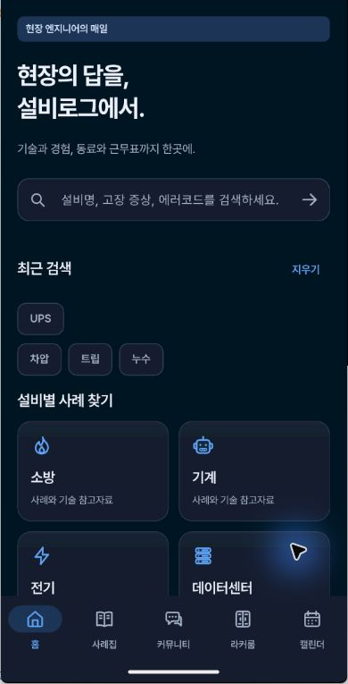
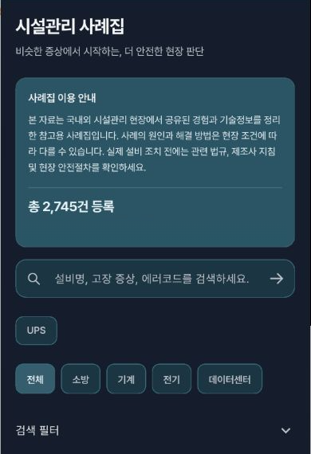
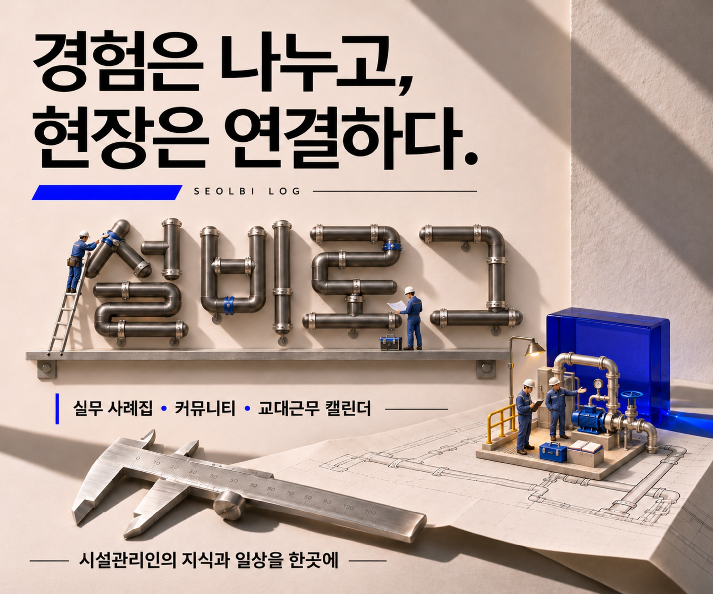
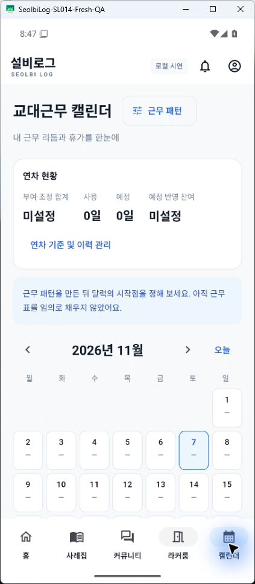

나만의 교대 패턴
주간·야간·비번·휴무 등 근무 흐름을 설정합니다.
현장과 동료를 잇는 시설관리 앱
필요한 자료와 나눌 경험,
매일 보는 근무표까지 한곳에서 만나보세요.

설비의 정보가
사람의 경험으로 이어집니다.
함께 연결되는 일상
지식을 찾고, 경험을 나누고, 근무를 정리합니다.
시설관리인의 매일을 위한 기능을 만나보세요.
01 실무 사례집
설비명, 고장 증상, 에러코드로 필요한 참고 사례를 살펴보세요. 다른 현장의 기록이 지금 확인해야 할 내용을 정리하는 데 도움이 됩니다.
사례 자료 2,737건과 기술 참고자료 8건을 수록했습니다.

점검표 · 관리대장 · 현장 업무 양식

현장에서 시작한 이야기
비슷한 고민을 해 본 동료의 한마디,
다음 교대조를 위해 남겨 둔 작은 기록.
설비로그는 그 경험들이 흩어지지 않고
서로에게 이어지는 공간을 만들어갑니다.
02 교대근무 캘린더
반복되는 근무도, 챙겨야 할 휴가도.
나의 근무 리듬과 일정을 한눈에 정리해 보세요.
주간·야간·비번·휴무 등 근무 흐름을 설정합니다.
다음 근무와 기록해 둔 일정을 함께 살펴봅니다.
사용한 연차와 남은 연차를 확인하며 휴가를 준비합니다.

03 현장 커뮤니티
혼자 고민하던 문제를 묻고,
직접 겪은 경험을 다음 동료에게 전합니다.
확인한 내용과 고민을 함께 나누어 보세요.
나에게 익숙한 경험이 다른 현장에 도움이 됩니다.
같은 일을 하는 사람들과 편하게 이야기 나누세요.
GOOGLE PLAY
앱 다운로드 링크가 준비되면 이곳에서 안내해 드리겠습니다.
 다운로드 링크 준비 중
다운로드 링크 준비 중앱 밖에서도 이어지는 연결
새로운 소식은 블로그에서,
질문과 경험 나눔은 카페에서 만나보세요.
실무 질문·답변, 현장 노하우와 사례,
자료 공유부터 자유로운 소통까지 함께합니다.
앱 활용 가이드와 업데이트,
설비와 현장에 관한 이야기를 전합니다.
설비로그의 방향을 담은 브랜드 필름을 만나보세요.
궁금한 내용을 확인해 주세요
소방·기계·전기·데이터센터 등 시설관리 실무에서 만나는 설비 정보를 다룹니다. 분야별 참고 사례와 현장 경험을 살펴보실 수 있습니다.
설비로그 카페와 블로그에서 앱 소개, 활용 가이드와 업데이트 소식을 전합니다. 아래 공식 채널을 통해 확인해 주세요.
카페의 ‘앱 문의·건의’ 게시판을 이용하거나 support@seolbilog.com으로 문의해 주세요.